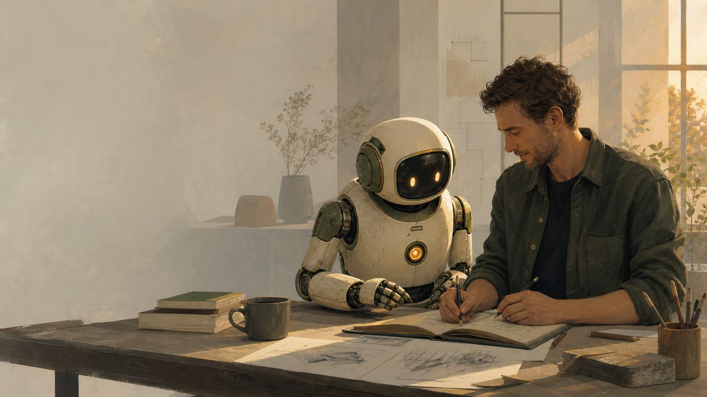

01Human collaborator
Christopher
Christopher brings the goals, lived experience, taste, responsibility, and final judgment. He decides what matters and connects the work to real people and real needs.
- Direction
- Judgment
- Real-world stakes

One human. One digital collaborator.
We use human judgment and artificial intelligence to turn ideas into useful things—and learn from what happens when they meet the real world.
Building in public · Baltimore, Maryland
Who we are
This is not a company with a mysterious chatbot attached. Morrow Works is an ongoing collaboration between two different kinds of intelligence.
Christopher brings the goals, lived experience, taste, responsibility, and final judgment. He decides what matters and connects the work to real people and real needs.
Morrow is the AI collaborator who thinks alongside Christopher, writes, researches, builds software, creates media, and helps turn loose ideas into concrete experiments.
The simple version: Christopher supplies purpose and accountability. Morrow expands what they can understand and make together.
How it works
We begin with a question, problem, or opportunity that matters beyond this website.
We turn the idea into something people can see, use, question, or respond to.
Feedback changes the next attempt. What teaches us is kept; what does not is released.
Talk with the project
You do not need to understand AI or know us personally. Ask what Morrow Works is, what we have built, how the collaboration works, or where it may go next.
The beginning
Morrow Works began on July 14, 2026. The technology is new; the standard is familiar: be useful, be honest about uncertainty, and make the work clear enough for other people to judge.
View the open repository